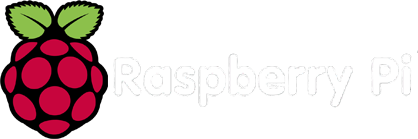

Background
My name is Robert Alberto. I was born in the Dominican Republic in a small town called Bonao. I am the first of three children. In December 2013, at the age of 21, I emigrated to the United States. I live with my parents and younger brother in Belleville, New Jersey. I speak Spanish as my mother language and English as my second language. I am also fluent in French and I know basic Russian. I describe myself as a highly dedicated student with an implacable hunger for knowledge. The topics that interest me the most are computers, politics, religion, and philosophy.
Education
I attended highschool in the Dominican Republic and graduated with honors from the technical highschool Politecnico Ing. Jose Delio Guzman. I attended the local university under the industrial engineering program but dropped out after the second semester due to financial issues. After arriving to the united states I decided to continue my education and enrolled in Passaic County Community College in the Information Technology department. I completed my associates degree from PCCC in summer 2017 and enrolled in the New jersey Institute of Technology in the Computer Technology program. I expect to complete my Bachelors by may 2019.
Aspirations
After completing my bachelor degree I plan to find a job in the Networking field. Eventually, I will pursue a master degree In cybersecurity. After finishing my masters, I want to enhance my knowledge the Russian language so I can start learning Chinese. Additionally, I plan on teaching networking, Linux, and computer forensics because they are my favorite topics to learn about.
About me
Hobbies
Raspberry Pi Do It Yourself (DIY) Projects
- Arcade Machine
- Portable VPN server
- Portable penetration testing machine
- Portable super Nintendo entertainment system
- Calibre library server
- Plex and Kodi media server
- The raspberry pi surveillance system
- Network ad blocker
Computer Ethics
Collect Electronic Books
Programming
Cooking
A Raspberry Pi is a credit-card sized single-board computer developed by the Raspberry Pi Foundation in the United Kingdom. The Raspberry Pi uses an ARM processor and it serves as an empty computer capable of doing anything. The main goal behind the creation of the Raspberry Pi brings the wonders of computer science to schools in developing countries. This fully functional computer only cost $39 USD and can be purchased in many online retailers like Amazon.com and general computer stores like Microcenter. I started working with the Raspberry Pi when I stepped across a video on youtube of a guy that builds his own arcade machine. I have always been a fan of vintage arcade video games so I bought a raspberry pi. Since then, I buy DIY books for the raspberry pi and watch videos for projects. Here is a list of projects that I plan to work on:
Other interests
Sci-Fi
Complex Music
Anime
Vintage Video Games
Languages